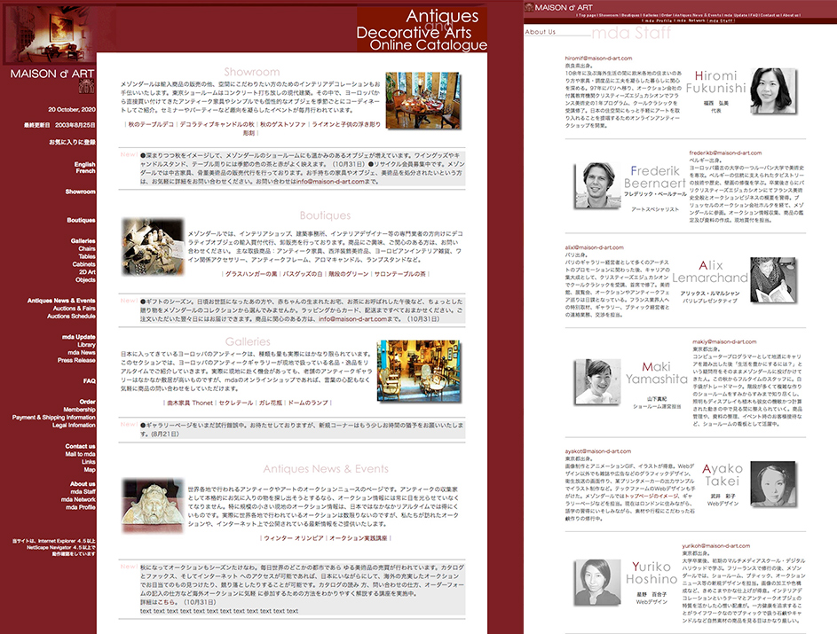
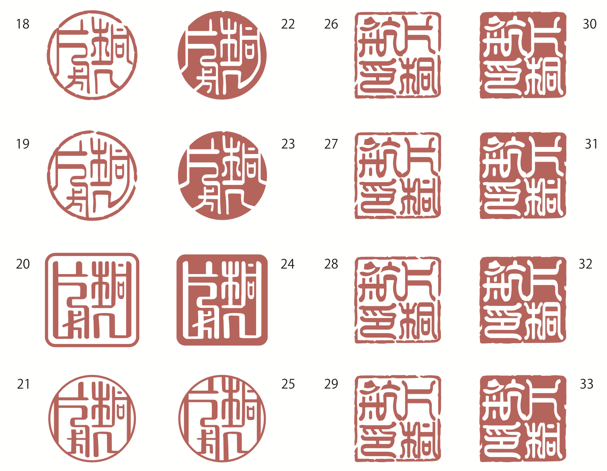
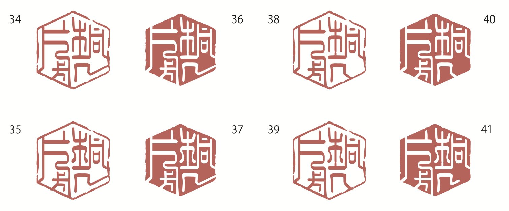

2000--2012
フリーランス
大学卒業後、御茶ノ水のデジタルハリウッドにてグラフィックソフト及び３Dソフトを学ぶ。 その後家業と並行し、フリーランスにて単発系のチラシやサイトを作成。時系列順不同。

▲2000~03年、アンティークのオンラインショップの制作に立ち上げより関わり、商品撮影、レタッチ、作成。
トップページは、リニューアルし、テキスト上にhoverすると画像が入れ替わる様なJavaScriptを記載。
当時は、html内に全て書くスタイルで、テーブルによるレイアウト。
他、ショールームでの接客や、商品の梱包発送なども対応。
▲左は、能登、穴水のカヤックチームのロゴ。七尾湾のボラ待ち櫓でA イルカのa、立山連邦をmi に見立てたもの。他友人の会社ロゴなど。
 ▲2019年ころ、遊び用のゴム印作成用データ